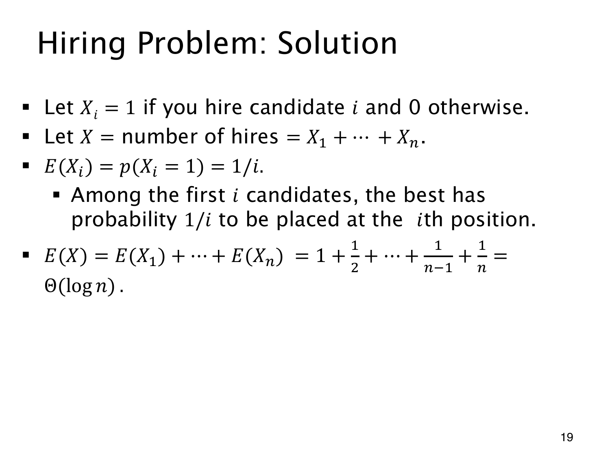

L1.11 · 第 19 页讲解原文
查看这一页课件

调和数给出平均聘用次数
i 是随机排列后的面试位置，不是能力排名。用 Xi 表示第 i 位是否被聘，总次数 X=∑iXi。
他被聘用，当且仅当他是前 i 位中最好的。均匀随机排列下，前缀最优者落在第 i 位的概率为 1/i，所以
E(Xi)=p(Xi=1)=i1,E(X)=i=1∑ni1=Hn.
首位必聘，对应第一项 1；后面位置打破纪录的概率逐渐降低。
第 n 个调和数 Hn 可用递减函数 1/x 的积分比较夹住：
ln(n+1)≤Hn≤1+lnn.
因此平均聘用次数为 Θ(logn)，指增长阶，并非精确等于 logn。最坏次序仍聘用 n 次。
计算只需要各位置的记录概率和期望线性性，不必先求总次数的分布，也不必另外证明这些指示事件独立。面试次数始终是 n，没有变成对数。